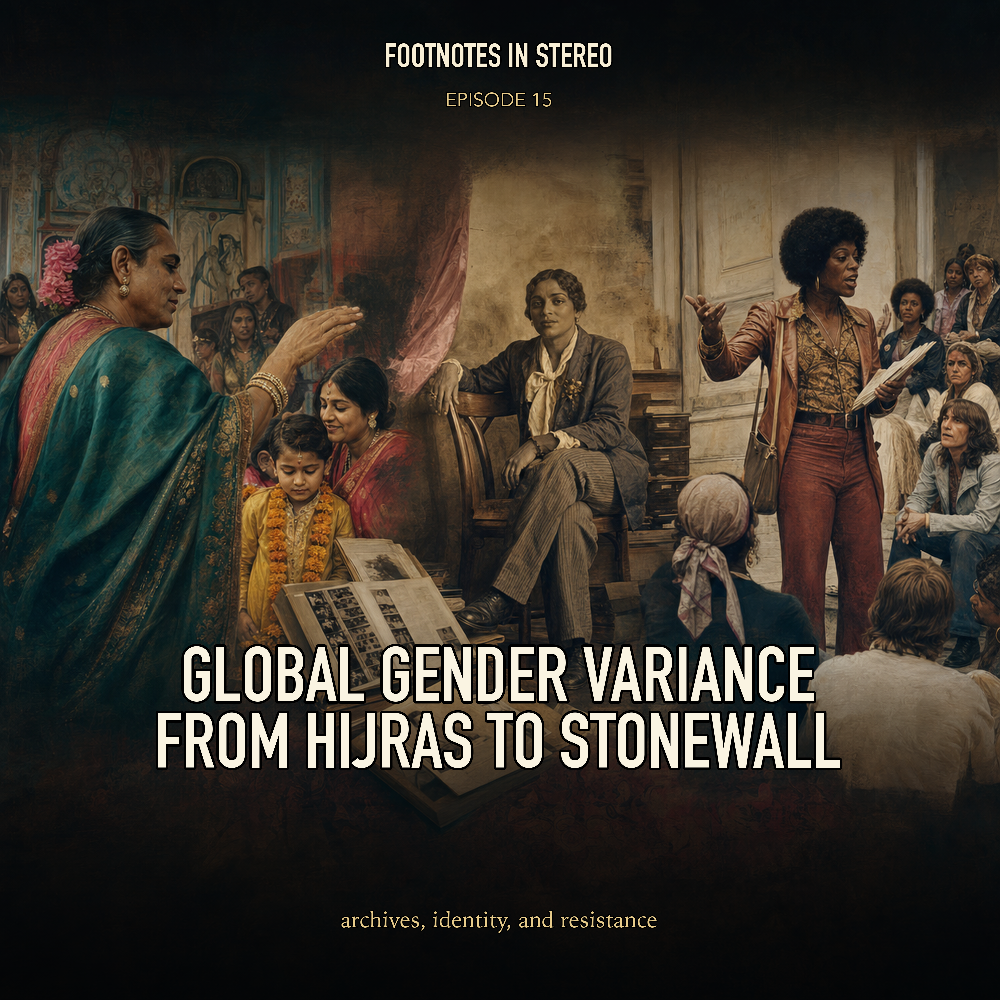

Episode 15 · Patreon bonus
Global Gender Variance from Hijras to Stonewall
This episode follows transgender and gender-variant history through archives, culturally specific third-gender roles, Stonewall-era activism, Sylvia Rivera, Marsha P. Johnson, STAR, and the problem of reading older records with modern identity language. Mira and Theo keep the history global without flattening the people, places, and terms that make it specific. Created with Gemini Notebook. The conversation and voices in this episode were generated with Gemini Notebook.
Sources
- "Hell Hath No Fury like a Drag Queen Scorned": Sylvia Rivera's Activism, Resistance, and Resilience | OutHistory
- Award-winning Digital Transgender Archive makes often hidden yet sprawling trans history accessible | Northeastern University
- Gathering History: The Digital Transgender Archive | American Experience | PBS
- Stonewall National Monument Cultural Landscape Inventory PDF | National Park Service
- Marsha "Pay it no Mind" Johnson | OutHistory
- Gay Liberation in New York City, 1969-1973: Gay Liberation Front Page One | OutHistory
- Gay Liberation in New York City, 1969-1973: STAR Page One | OutHistory
- Stonewall National Monument Cultural Landscape | National Park Service
- The Third Gender and Hijras | Religion and Public Life, Harvard Divinity School
- Marsha P. Johnson & Sylvia Rivera Collection | Digital Transgender Archive
Transcript
Machine transcript; lightly formatted and subject to correction.
Imagine, uh, you are an undercover NYPD officer, right? It's 1969. Okay, setting the scene. Yeah. And you've just raided this dimly lit mafia run bar in Greenwich Village. And your expectation, I mean, built on years of identical raids is entirely predictable. Right. It's just a routine operation for them. Exactly. The lights go up, the patrons cover their faces in terror, and they just scatter into the night in absolute shame. But tonight, uh, the script totally flips. They don't run. Oh, definitely not. No, instead you step outside and a flurry of pennies, bricks, heavy glass beer bottles. It all just rains down on you, hurled by runway youth, sex workers, drag queens who have, you know, finally decided they have absolutely nothing left to lose. So welcome to today's deep dive. It really is the moment the expectation of shame was just shattered. But, uh, you know, to understand how we get to that exact moment and where it echoes throughout time, we have to look far beyond the streets of New York. We are pulling from an incredible stack of sources today. We really are. I mean, we're digging into the Digital Transgender Archive, official National Park Service historical reports, uh, fascinating case studies from the Harvard Divinity School and these incredibly detailed biographies from out history. It's a massive scope. Yeah. And our mission for you today is to explore this sprawling global and often, quite frankly, intentionally hidden history of gender variant and transgender individuals. But our specific goal here is to look at this history without flattening incredibly distinct cultural identities into a single, you know, convenient 21st century box, which is a very real hazard. I mean, in mainstream discourse, there is this pervasive cultural amnesia. Oh, absolutely. Yeah. There's a tendency to treat gender variants as a purely 21st century phenomenon. People talk about it as if it's, uh, some invention of the Internet age, right? Like a sudden modern. Like it just popped up 10 years ago. Exactly. But if we trace the three line of our sources today, we cross oceans, we span millennia. We're looking at how identities are preserved in the historical record, how the ancient South Asian, hyggeret tradition constructed an institutionalized third gender like centuries before Western theorists even had a vocabulary for it. Right. And of course, the gritty fractured mechanics of street activism in mid century America. Well, let's start with the mechanics of the archive itself because that cultural amnesia, you mentioned, is so prevalent. Like if people have been living outside of a strict gender binary for centuries all over the globe, the really obvious question is why is it so incredibly hard to find them in the historical record? That is the foundational dilemma. Right. And when you are building an archive, how do you even begin to look for these narratives without just projecting our modern vocabulary on to people from the past? Well, that right there is exactly what historians in this field are grappling with. And it brings us to the methodology behind the digital transgender archive or the DTA. So this initiative was launched in 2016 by KJ Rossin. And honestly, it was born out of intense methodological frustration. Like I just couldn't find anything. Basically. Yeah. When Rossin was researching in graduate school, it was shockingly difficult to find primary source materials because the way archives are structured, the metadata, the literal tags and keywords used to organize the physical files, it just didn't reflect the lived realities of these individuals. Wow. So the system itself was the barrier. Exactly. The DTA was built to be this online hub to circumvent that traditional rigid cataloging system and finally make these hidden materials globally accessible. And the growth documented in the source is staggering. I mean, the DTA started with fewer than 10 contributors and has absolutely exploded. It really has. Yeah. They now host over 10,300 digitized historical materials and they're pulling from over 70 universities, nonprofits, public libraries and even private collections. But the archive immediately confronts that cultural amnesia we were talking about. Oh, it has to. Right. KJ Rossin points out the public reaction to Caitlyn Jenner transitioning a few years ago. The media framed it with utter shock, you know, acting as if a public figure navigating a gender transition in the spotlight with an entirely unprecedented event in American history, which exposes a massive blind spot because the archive is literally full of counter examples. I mean, look at Christine Jorgensen in the 1950s. Oh, right. She was a former US soldier who transitioned publicly and became an absolute international sensation. Huge celebrity. Yeah. And what's fascinating about Jorgensen is her public relations strategy. She didn't retreat. She actively engaged with the press, colonizing this image of glamour and sophisticated femininity. She wanted to control her narrative and what was, you know, a deeply conservative era. So she was very intentional about highly intentional. The DTA houses a growing collection of materials detailing exactly how she navigated that mid-century media landscape. But, you know, finding other figures like her requires navigating a massive linguistic hurdle. Because, I mean, if I walk into a university library and try to search a 1910 newspaper archive using the word transgender, I'm going to get zero results. Not a single one. Yeah. The term transgender is a very recent addition to the lexicon. So historians face this constant threat of anachronism. You just cannot retroactively apply a modern sociological label to a person who never used it, especially when they lived in a completely different society. Right. A society where the entire structural concept of gender was mapped differently. I was trying to visualize the mechanics of this translation issue while reading the sources. It's almost like taking the operating system of a modern smartphone and trying to install it on a 19th century telegraph machine. Oh, that's a great way to put it. Like the hardware of their daily lives, the cultural machinery they were operating within, it simply does not match the software of our modern language. You just can't force the code to compile. We have to appreciate them on the terms of the machinery they were actually working with. I think that captures the friction perfectly. The software doesn't compile backward. So to build the DTA archivists, they don't search for the word transgender. So what do they look for instead? Rossin explains that they look for evidence of transgender practices or transgressions of gender norms. They have to follow the physical actions, the legal violations and the lived realities rather than just searching for an identity label. And the sources reveal this fascinating and frankly kind of grim divide in what those records actually look like. You have mainstream historical records and then you have internal community documents. The contrast is stark. It really is. When you look at the mainstream records like the police bladders, the city newspapers, the individuals have absolutely no agency over their own story. Right. Those mainstream records are almost entirely carceral or sensational. Yeah. Newspapers documented people who are violating local ordinances, specifically these mass grade laws that dictated exactly how many pieces of clothing you were required to wear corresponding to your assigned sex at birth. Which is wild to think about today. It is. These articles were published as public interest stories, but functionally they were mechanisms of social control. They served as public warnings. And the tone described in the sources is pure spectacle. Headlines like former soldier turns into a blonde beauty or father of three becomes a woman. They weaponize these conventional rigid icons of 1950s masculinity to make the supposed transgressions seem as shocking and alien as possible. Exactly. But the archive becomes truly revelatory when you flip the script and look at the internal community documents. When you look at publications made by and for gender variant people, the tone just entirely shifts from spectacle to solidarity. This is where you find the actual texture of everyday life. Yeah. You find first person accounts letters to the editor debates over respectability and relive to experiences. The source highlights drag magazine, which started in the US in the 1950s. And I found this completely fascinating because this wasn't some flimsy, mimeographed sheet passed around in a dark alley. No, not at all. It was a glossy high production magazine and it was tethered to Lee Brewster's boutique in New York City. The boutique served as this vital physical hub where people could buy clothing, get makeup tips and construct a community architecture that wasn't, you know, mediated by police or psychiatrists. And that community architecture extended far beyond New York. Oh, really? Yeah, the DTA holds collections that prove these networks were globally intertwined long before the digital age. There is a specific collection of materials from South Africa, including a newsletter spanning the 1970s and 80s. Wow. During apartheid. Yes. In these fragile, typewritten pages from apartheid era South Africa, the authors are cross referencing and discussing publications from the United States from Canada and from Ireland. That is incredible. Marginalized individuals were actively forging this international network of shared experience and political strategy right through the mail. That paper trail network is just amazing and it gets deeply intimate when you look at the personal correspondence. The sources highlight an archive of letters between Lou Sullivan and Ben Power. And the context around Lou Sullivan is just a masterclass in the medical mechanics of the time. It really is. Yeah. Lou Sullivan is widely recognized as a foundational figure in the female to male or FTM movement in the United States. Right. He dedicated his life to advocating for FTM individuals and building a visible community. But he ran into a massive institutional wall of medical gatekeeping. Right. Because Sullivan identified as a gay man. And in the 1970s and 80s, the psychiatric framework used by doctors simply could not disentangle gender identity from sexual orientation. Exactly. The diagnostic criteria of the era, which was influenced heavily by early iterations of the Harry Benjamin standards of care and the prevailing psychiatric models. Well, it operated on a rigid heterosexual assumption. So they just assumed transition meant you wanted to be straight. Pretty much. The medical establishment's logic was if you are assigned female at birth and you were attracted to men, why would you undergo the arduous process of medical transition only to become a gay man? Wow. To the gatekeepers, transition was viewed merely as a mechanism to achieve societal heterosexuality. A gay trans man broke their algorithmic understanding of human psychology. So Sullivan essentially had to outsmart his own doctors to receive care. He did. He fought those medical boundaries relentlessly until his death in 1991. But in the meantime, he built this infrastructure of support through letters. Ben Power, who is organizing an East Coast F2M group in Massachusetts, had read an informational booklet Sullivan wrote. Right. And that sparked their connection. Yeah. Their correspondence reveals this deep long distance friendship where power is navigating his own identity through Sullivan's mentorship. It really highlights how fragile and vital these paper lifelines were. It does. But we must ensure we don't frame the entire archive as just a catalog of trauma and struggle. Right. That's a good point. The preservation of joy is equally important here. The DTA houses photographs of a figure named Allison Lane from the 1950s. Lane was an activist who moved fluidly between male and female roles throughout her life. I remember seeing that source. Yeah. There was a specific photograph of her in rural Pennsylvania. She's leaning against a historical canon dressed in typical elegant 1950s women's wear. And the expression on her face is pure on the adulterated joy. She is reveling in the simple act of existing in public space, which is profound when you consider the educational application of a DTA today. Educators using these archives in high school classrooms hearing from 14 year olds who see these historical documents and realize they aren't anomalies. It gives them a history. It gives them a lineage exactly. But all of this the entire DTA is primarily a Western project of piecing together scattered fragments. It's this retroactive hunt for people defying a strict binary. We see this exact same colonial impulse to legislate and categorize identity cropping up in our other sources, but in a completely different cultural context. Very different context. Right. Because if we look at South Asia, we don't have to hunt for fragments in police bladders. No, we find an entirely different structural paradigm. The Harvard Divinity School case study on the Hijra tradition in India, Bangladesh and Nepal. It details a society that has possessed an institutionalized socially recognized non binary role for millennia. millennia. That's huge. We're looking at historical and religious evidence of third gender roles stretching back over 2000 years. The theological roots are incredibly deep. The sources point out that these roles are referenced in foundational Hindu epics. In the Maha Karada, the great warrior hero Arjuna spends an entire year living as Brihanala, a eunuch who teaches dance and music. Right. There's a strong mythological precedent that precedent provides this unshakable cultural anchor. But to understand the Hijra tradition, we have to define it with immense precision because it absolutely does not map onto Western models of transgender identity. It doesn't at all. The terminology and the lived experience are totally distinct. According to the Harvard case study, Hijras are predominantly individuals born male or intersex who dress and live in traditionally feminine ways. Oh, OK. And many within the community choose to undergo a specific highly ritualized castration ceremony. And this is the critical distinction here. In the Western framework, a surgery is often viewed as a medical intervention to align the body with an internal gender identity. Right. A transition from one point on the binary to another. Right. That's the modern Western view. But for the Hijras undergoing this ceremony, it is not a medical reassignment. It is an act of profound religious devotion. It is a literal sacrifice of their pro-creative ability offered to the Hindu goddess Bohu Charamata. Consequently, they don't view themselves as having transitioned to become women. They consider themselves in traditional South Asian society, largely considers them to be entirely distinct, a third gender. So they just stand completely apart. Yes. They possess an identity that stands apart from the male female binary altogether. And the social architecture of the Hijra community reflects that distinction. A young person doesn't just adopt the word Hijra as a personal identifier and go about their day. Oh, no. It requires entering a highly regimented, hierarchical community. They leave their family of origin. They follow a senior guru and become a chila or disciple. They are initiated into secret traditions, dialects, and ways of life living communally in specific households. And this communal structure exists to support their unique, powerful role in society. For centuries, their primary societal function has been ritualistic. Right. Hijras perform specific dances, sing traditional songs, and give blessings at major life transitions for Hindus, specifically births and weddings. The mechanics of this blessing are fascinating to me. The belief is that because a Hijra has sacrificed their own procreative power to the goddess, they possess this concentrated divine energy. Exactly. They hold real power. They have the spiritual authority to confer fertility, prosperity, and long life onto a newborn or a newlywed couple. But that spiritual authority is a double-edged sword. Oh, so? Well, with the power to bless comes the power to curse. If a family disrespects them or refuses to provide the customary payment for their blessing, a Hijras curse is widely believed to bring misfortune or infertility. And people take that seriously. The sources describe Hijras arriving at weddings uninvited, claiming their sacred right to perform. And families, out of a genuine fear of the curse, will welcome them in and pay them. It creates a real dynamic of tension. It creates a total paradox. How can a society simultaneously revere a group as spiritually potent enough to dictate the fertility of a marriage, yet socially marginalize them to the extreme? It reminds me the role of certain ascetic or mystical figures in Western antiquity. That is actually an excellent framework for understanding their position. Like you look at figures like the Oracle at Delphi or Hermit's living in the desert in early Christianity, they were deeply feared. They were deeply respected because they had a direct line to the divine that everyday citizens just didn't possess. But they were intentionally kept on the absolute fringes of polite society. You desperately wanted their blessing. You feared their wrath, but you didn't want them marrying into your family or living in your neighborhood. Yeah, they exist in a truly liminal space. They hold massive authority in the spiritual realm, but are incredibly vulnerable in the civic realm. And what adds another layer of complexity to the Hijras identity is their fluid navigation of religion. This part blew my mind. Their ritual role, the blessings at weddings and births, is entirely rooted in Hindu cosmology. They perform these rituals for Hindu families. Yet the sources explicitly note that a significant percentage of Hijras are actually Muslim and some are Christian. I found that detail just extraordinary. The case study notes that many beautifully synthesize these belief systems. Yeah, they blend them. A Hijra might send her her household around a shrine to the Hindu goddess Bhagucharamata. Rely on Hindu theology for her societal role. Yet simultaneously take a Muslim name, observe the fasting of Ramadan and pray at Islamic shrines. They reject the gender binary, but they also reject the rigid boundaries of religious exclusivity. It is a profound pragmatic syncretism. And to understand how their civic vulnerability became so acute today, we have to look at the mechanics of empire. Right. Between the 15th and 19th centuries under the Muslim rulers of the Mughal Empire, Hijras were actually granted significant patronage. Many held positions of influence within the courts. They were integrated into the political and social elite. And then the British Empire arrives. And everything changes. The arrival of British colonialism introduces a devastating systematic attempt to erase them. In the 19th century, British colonial administrators operating from a framework of rigid Victorian Christian morality were utterly appalled by the existence of an institutionalized third gender. They view the Hijras not as a religious tradition, but as an inherent threat to public decency and imperial order. They literally legislated against their existence. In 1871, the British enacted the Criminal Tribes Act. They formally classified all Hijras as a criminal group. A whole identity criminalized. Yes. Colonial authorities and local police were instructed to arrest them on site simply for existing in public. It was a targeted campaign to eradicate a 2,000 year old identity through the penal code. While the Hijras community proved incredibly resilient, I mean, they went underground and maintained their sacred rituals despite the constant threat of imprisonment. The structural damage of nearly 200 years of British stigmatization was catastrophic. You can't just undo that overnight. No, even after India gained independence and eventually repealed the 1871 law, the cultural poison had seeped deep into the groundwater. The legacy of that colonial law is the extreme poverty many Hijras face today. Because they were pushed out of the formal economy for generations, they are frequently excluded from education and traditional employment. It's a vicious cycle. Outside of their ritual roles, many are forced to survive through begging on trains or engaging in sex work. They face systemic violence, police harassment, and severe discrimination in health care settings. The historical trauma is immense. However, the sources also highlight a wave of recent, hard fought legal and political triumphs. Which is really encouraging to see. It is. The activism of the community has forced the state to reckon with their existence. By 2014, the Supreme Court of India delivered a landmark ruling declaring transgender individuals as a recognized third gender and framing their rights as fundamental human rights. Nepal and Bangladesh have implemented similar legal recognitions. The political breakthroughs are tangible too. In 2015, the city of Rhaegar in India elected its first Hijra mayor, Madhu by Kinar. Yeah. And in 2017, the Kochi Metro hired over 20 Hijras to work in their public transit system as a direct effort to provide formal employment. They survive an empire's attempt to erase them. And now they are reclaiming civic space. It's a remarkable testament to the endurance of community. And, you know, while British colonialism was using the penal code to crush gender variants in South Asia in the 19th century, a highly analogous form of legal policing was tightening its grip on mid 20th century America. The parallels are definitely there. In New York City, the authorities were using old masquerade laws and liquor authority regulations to squeeze anyone who didn't fit the mid century mold. They created a societal pressure cooker. And the geography of where that pressure cooker was located is vital to understanding why it eventually exploded. Geography is absolutely destiny in urban resistance. To understand the explosion, we have to look at the specific topography of Greenwich Village, Manhattan in the 1960s. Because it's not like the rest of the city, right? No. The National Park Service Historical Report provides a crucial piece of context regarding urban planning here. If you think about the layout of your own city's downtown area or the famous grid of Manhattan above 14th street, everything is rectangular, predictable, and heavily regulated. Right. Standard city blocks. If a protest breaks out on a straight grid, the police can simply form a line spanning the avenue marked forward and efficiently clear the street. But Greenwich Village doesn't follow the grid. It retains a 17th century Dutch street layout. It's this chaotic maze of narrow angled intersecting streets that suddenly stop or curve back on themselves. It's notoriously confusing. It is an urban planer's nightmare. But as we'll see, it is a street fighter's dream and nestled within this maze on Christopher Street with the Stonewall Inn. The building at 51.53 Christopher Street is such a layered history. Constructed in the 1840s at horse stables, converted into a restaurant in the 1930s, and finally in 1967, it reopened as a gay bar named the Stonewall Inn. Right. But we need to unpack the mechanics of what operating a gay bar in 1967, New York actually entailed. Right. Because it wasn't a standard business model. Homosexuality was effectively illegal. The state liquor authority had regulations that prohibited bars from serving alcohol to known homosexuals, claiming their mere presence rendered a bar disorderly. So legitimate owners wouldn't go near it. Exactly. Legitimate above-board business owners wouldn't touch this clientele because they would instantly lose their liquor license. So who steps in to fill the void? Organized crime. The mafia recognized a captive lucrative market. The Genovese crime family controlled many of the gay bars in the village, including the Stonewall Inn. And we really shouldn't romanticize this arrangement. The mafia ruthlessly exploited the patrons. The mechanics of the exploitation were brutal. The mob paid off the local police precincts to turn a blind eye. In exchange for this precarious protection, the mafia watered down the drinks, overcharged at the door and maintained absolutely deplorable health and safety conditions. No terrible in there. There were no fire exits. There wasn't even running water behind the bar to wash the glasses. They just slosh them in a tub of standing water. And worse, they often blackmailed wealthier patrons, threatening to out them to their employers if they didn't pay up. Yet, despite the extortion and the crime, these mafia-run spaces were the only sanctuary available. The Stonewall Inn was dimly lit. The windows were painted black and it had a large dance floor. Which was a big deal. Huge deal. So the patrons, gay men, lesbians, and a growing population of runway youth and drag queens. It was one of the few places in the city where they could congregate and exist without hiding. But the police payoffs weren't foolproof. The NYPD would still conduct periodic raids, often to remind the mob who was really in charge or just to fulfill a rest quotas. The protocol for a raid was universally understood by the community. He knew the drill. The cops enter, the lights are flipped on, the music stops. Patrons are lined up, IDs are checked. Those dressed in drag are pulled aside for violating the masquerade laws. And the primary goal of the patrons was simply to slip away into the night before they were arrested. Their names published in the paper and their livelihoods destroyed. That was the grim accepted choreography of survival. But the historical record, specifically the Emily K. Hobson report, is careful to correct a major misconception. Stonewall was not the first time the choreography broke down. No, not at all. The LGBTQ community had a rich history of resistance prior to 1969. This is such an important point. Hobson outlines multiple precursors where queer people fought back. In May, 1959, you had the uprising at Cooper's Donuts in Los Angeles where patrons clashed with police. Right. In April, 1965, there was the Dewey's restaurant sit-in in Philadelphia. August, 1966 saw the massive Compton's cafeteria riot in San Francisco, spearheaded by trans women and drag queens furious at police harassment. And in February, 1967, there were widespread protests following violent police raids at the Black Cat Tavern in LA. Alongside the spontaneous street-level riots, you had the organized systemic work of the early Homophile movement of the 1950s and 60s. The Madison Society, right? Organizations like the Madison Society and the Daughters of Bilitas, yes. They were fighting for civil liberties, but their tactics were entirely assimilationist. Let's unpack the logic of the Homophile movement. Their strategy was heavily focused on looking as respectable and non-threatening to middle-class America as possible. When they held pickets outside government buildings, they strictly enforced a dress code. Ties and dresses only. Men in sharp suits and ties, women in conservative dresses. The psychological strategy was to create cognitive dissonance for the straight public. They wanted society to look at them and think, these people look just like my accountant or my neighbor, why are we firing them? And it worked to a degree. They achieved real legal victories. The California Supreme Court rulings like Stomann v. Riley in 1951 were monumental in establishing that simply being gay wasn't a crime that justified shutting down a business. But that respectability politics created a profound schism. The Homophile movement's legal strides benefited those who could assimilate. White, middle-class, gender-conforming gay men and lesbians. Right. It offered absolutely nothing to the street queens, the trans women, the youth of color who couldn't hide their differences in a three-piece suit. Which leads to the central historical question. If the Homophile movement was making methodical progress in the courts, and if there had already been violent brick-throwing riots at cafes in California years earlier, why did Stonewall become the legendary flashpoint? What was the alchemy of that specific night in 1969? It requires looking at the convergence of three distinct variables. First, the specific demographic makeup of the Stonewall Inn. Okay, the people. Unlike some of the more exclusive private club style bars, Stonewall was known as a CD establishment. It welcomed the most marginalized factions of the community. Queer street youth, sex workers, drag queens, people of color. These were individuals who endured the highest, most brutal levels of daily police violence. And crucially, they had absolutely no social capital left to protect. They had nothing to lose. The vanguard is almost always led by those who are already at the absolute bottom of the societal ladder. Exactly. Second, the geography. Christopher Street was the dense, beating heart of the community. Christopher Park, right across the street from the bar, was an encampment for homeless queer youth. So they were right there. When the police initiated a raid, they weren't isolating a building in a deserted industrial park. They were kicking a hornet's nest in the middle of a densely populated, highly sympathetic neighborhood. You had instant reinforcements. And the third variable is the temporal context. The year is 1969. You cannot analyze Stonewall outside the geopolitical atmosphere of the late 1960s. The country was saturated in the rhetoric of radical protest. The anti-war protests, civil rights, the anti-Vietnam war movement, the black power movement, the feminist movement, the new left. The concept that state authority could and should be challenged in the streets was pervasive. The tactical knowledge of how to riot was practically in the air. Wow. Combine those three factors with immediate, intense media coverage from alternative press like the Village Voice. And Stonewall wasn't just a riot. It was a spark hitting a mountain, a perfectly dried cultural kindling. That structural breakdown makes perfect sense. It was the right people in the right labyrinth of streets at the exact right moment in global history. And that brings us to the mechanics of the night the spark actually caught fire. June 28, 1969. The raid began like any other. Undercover police officers entered the Stonewall Inn, acting on orders from the public morals division. Okay. Their primary targets were the management to confiscate the alcohol. And patrons who lacked proper identification or were dressed in drag, intending to arrest them under the masquerade laws. So the police started hauling people out to the street to load them into patty wagons. But because it was a hot summer night and the bar was right next to the park and subway stations, the crowd outside swelled rapidly. Instead of scattering, the patrons forced out of the bar stayed and the youth from the park joined them. The initial mood of the crowd was actually somewhat theatrical. Really? Yeah, they were taunting the police, cheering as patrons were brought out. But the atmosphere violently fractured when the police tactics escalated. As officers began aggressively and physically forcing individuals into the back of the police fans, the crowd recognized the sheer brutality of the state apparatus at work. The source is pinpoint the breaking point. People began throwing anything they could get their hands on. Pennies, cobblestones, bricks from a nearby construction site and beer bottles. And at the absolute center of this maelstrom were two figures who are foundational to this history. Marsha P. Johnson and Sylvia Rivera. Icons. The out history biographies provide incredible context for who they were before they became historical icons. Their backgrounds illustrate exactly why they were primed to fight back. Marsha P. Johnson, a trans woman born Malcolm Michaels in New Jersey, moved to Greenwich Village in her late teens. Right. She adopted the name Marsha P. Johnson, famously telling anyone who questioned her gender that the peace stood for, Pay it No Mind. Pay it No Mind. It is such a brilliant deflecting shield. It's a refusal to engage with the premise of the interrogation. She was known throughout the village for her exuberant personality wearing exotic hats woven with fresh flowers and inexpensive jewelry. But beneath the joy, she lived a life of intense precarity, often surviving on the streets without stable housing. Sylvia Rivera's early life was similarly defined by survival. Born Ray Rivera to a Venezuelan mother in Puerto Rican father. She was orphaned at a very young age, facing severe abuse from her grandmother for her effeminate behavior. Sylvia left home permanently when she was only 11 years old. Wait, 11 years old? 11 years old. She survived by hustling and engaging in sex work on the notoriously dangerous 42nd Street. She was taken in and informally adopted by a group of older drag queens who mentored her in the brutal mechanics of street survival. So on the NYPD starts cracking skulls at Stonewall. You have Marsha and Sylvia, two women who have literally fought for their physical survival on the concrete every single day standing right on the front lines. Exactly. The National Park Service report details how witnesses saw Marsha throwing rocks at police cruisers, comparing her to Molly Pitcher in the Revolutionary War. And Sylvia is widely credited with in movement lore as being one of the first to throw a bottle. Whether or not Sylvia physically threw the literal first object is debated by historians, but it almost doesn't matter. The symbolism is what counts. The symbolic truth aligns with the historical reality. They were the Vanguard and the crowds tactics at night were brilliant. Remember the Dutch street layout we discussed? Yes, the maze. The NYPD called in the tactical police force. The riot squad trained to clear protests, but the protesters used the maze of the village to outmaneuver them. The police would charge down Christopher Street in a phalanx, but the protesters would simply scatter down the narrow side streets, spread around the block and suddenly reappear right behind the police line. It was asymmetrical urban warfare and it didn't end when the sun came up. The riots reignited night after night, lasting for nearly a week. Thousands of people descended on the village, but the true historical weight of Stonewall isn't the broken glass. It's the political infrastructure that was built in the immediate aftermath. One weeks, the Gay Liberation Front or GLF was established. The formation of the GLF marks a seismic ideological shift. They intentionally adopted the term liberation, borrowing directly from the National Liberation Front in Vietnam and the Algerian anti-colonial movements. That's a strong statement. This was a total repudiation of the homophile movement's polite, suit and tie assimilation. The GLF wasn't asking lawmakers for legal tolerance or a seat at the table. They were demanding the complete dismantling of the societal structures that regulated gender, sexuality and the family. The analogy I keep returning to is housing. The homophile movement was essentially lobbying the neighborhood HOA, asking if they could please change the bylaws so gay people could quietly move into a house on the cul-de-sac. Right, just asking to fit in. The Gay Liberation Front looked at the neighborhood, realized the foundation was rotten and decided to bulldoze the entire subdivision to build a public commune. That perfectly illustrates the tension between reform and revolution. And the GLF operated on a platform of intersectional solidarity. They actively allied themselves with the Black Panthers, the Young Lords and the anti-war movement. They saw the connections. They understood that police brutality against a drag queen in the village was fundamentally connected to police brutality against a Black activist in Harlem. But, and this is the massive heart-breaking caveat that the Hobson Report details, that revolutionary unity was a mirage. The solidarity forged in the heat of a street riot fractured almost immediately when they sat down in meeting halls. The GLF splintered rapidly along the fault lines of race, class and most aggressively gender expression. The reality of Greenwich Village and the gay community itself was highly stratified. Oh, absolutely. You had wealthy white cisgender gay men who wanted to end police harassment, but otherwise enjoyed their societal privilege. As the movement matured into organizations like the gay activists Alliance or GAA, the radical edge was dulled. And this brings us to the tragedy of respectability politics. The very people who fought the cops tooth and nail at Stonewall, the street kids, the trans women, the drag queens of color suddenly found themselves viewed as a political liability by the new leadership. Marsha and Sylvia became the uncomfortable other. Martin Duberman's historical analysis points out that they embodied multiple intersections of marginalization. They were poor. They were black and Latina. They were sex workers and they were gender variant. They were everything the mainstream wanted to hide. The white middle class leadership of the GAA was trying to draft legislation and court city politicians. They genuinely, coldly calculated that associating with radical drag queens would alienate the conservative lawmakers they needed to win over. It is the ultimate betrayal. You need their fury to clear the streets of police, but you crop them out of the photograph when you sit down with the mayor. Exactly. And this betrayal wasn't subtle. In 1970, gay liberationists staged a sit-in at New York University's Weinstein Hall to protest the cancellation of gay student dances. Marsha and Sylvia were there on the front lines. But the moment the heavily armed tactical police force arrived, the middle class mainstream organizers abandoned the action and fled the building. Sylvia and Marsha were apoplectic at this cowardice. They felt the movement was simply replicating the oppressive structures of the straight world. They released a blistering leaflet aimed at the mainstream organizers stating, you people run if you want to, but we're tired of running. And channeling that profound sense of betrayal, they founded STAR, the street transvestite action revolutionaries. SDAR was revolutionary because it was the first organization in New York City entirely focused on the material survival of street queens and homeless queer youth. They weren't lobbying for marriage equality. They were focused on mutual aid. They managed to secure a physical building, an apartment at 213 East Second Street, which became the Star House. The mechanics of STAR were grounded in sheer willpower. Sylvia stated their primary objective was to keep youth off the streets, sparing them the violence she and Marsha had endured. Marsha referred to the homeless kids they took in as her children, stepping into the role of the house's queen mother. That's beautiful. And the economic reality of maintaining this safe haven was brutal. To pay the rent and buy food for dozens of youth, Marsha and Sylvia continued to hustle and engage in sex work on the streets, absorbing the physical danger themselves so the youth in their care could sleep safely. It is an unparalleled example of community care. And you would think the larger wealthier gay organizations would support this crucial front line work. But the sources reveal a litany of rejection. So many rejections. When STAR tried to organize a fundraising dance, the GAA flatly refused to even loan them a stereo system, callously stating they were not in the rental business. When STAR was facing eviction and desperately needed funds to save the house, the mainstream organizations turned their backs. And the political betrayals culminated in a devastating legislative blow years later. Right. In 1986, New York City was finally poised to pass its first major gay rights bill. The mainstream advocacy groups desperate for a legislative victory actively lobbied to exclude protections for transgender people and drag queens from the language of the bill. Unbelievable. They made a calculated backroom deal with conservative lawmakers, literally tossing the most vulnerable members of their community under the bus to secure rights for cisgender gay men and lesbians. That is the moment Sylvia Rivera delivered her legendary quote, hell hath no fury like a drag queen scorned. And I want to pause here to push back on the sanitized corporate rainbow washed version of history we are often fed during modern pride parades. We really need to. The narrative is usually framed as a unified march from the darkness of 1969 into the bright light of equality. But the historical reality is that Martian Sylvia were fighting a grueling two front war. They were battling a hostile violent state on one front and on the other. They were fighting a relentless rear guard action against their own supposed allies who saw them as disposable. It forces us to confront the uncomfortable transactional nature of political progress. The tension between assimilation, modifying yourself to fit the existing system to gain incremental safety and radical liberation, refusing to compromise and demanding the system change to accommodate everyone. That is the defining conflict of post-stunwell history. And they made their stance clear. Rivera and Johnson vehemently rejected assimilation. They demanded that the movement center its most marginalized people. The aftermath of their activism is deeply sober. They didn't write off into the sunset. Marcia did achieve moments of high cultural visibility. She posed anonymously for Andy Warhol in 1975 for his Ladies and Gentlemen Polaroid series. But in 1992, her body was found floating in the Hudson River. It's tragic. The police quickly almost reflexively ruled it a suicide. But her friends in the community adamantly insisted she was not suicidal, noting she had been harassed and followed earlier that day. There was never a rigorous criminal investigation into her death. The state's indifference to her death was a final insult. Sylvia, devastated by the loss of Marcia and deeply cynical about the assimilation's trajectory of the mainstream gay movement, struggled intensely. She experienced severe poverty, attempted suicide, and for a period in the late 90s, lived in a homeless encampment on the peers in the West Village. But her resilience was a face of nature. Truly. In 2001, incensed by the murder of a trans woman named Amanda Milan, Sylvia re-emerged and actually resurrected STAR to demand justice. Sylvia famously declared, Before I die, I will see our community given the respect we deserve. She passed away from liver cancer in 2002 at the age of 50. Even from her hospital bed, she was organizing, meeting with activists, and demanding that the mainstream movement include transgender people in their fight for equality. Their legacy is a permanent radical challenge. They demand that historians and modern activists never look away from the people pushed to the absolute margins. And as we bring this deep dive full circle, synthesizing these incredible sources, a singular truth emerges. When you look at the complex theological architecture of the Heidra tradition, preserving a third gender for thousands of years, when you sift through the fragile letters and glossy magazines saved in the digital transgender archive, and when you examine the messy, fractured, militant reality of Stonewall and STAR. It destroys the cultural amnesia. Yeah, it completely destroys it. Gender variance is not a modern internet trend. It is a fundamental enduring reality of the human condition. The words change, the legal codes shift, empires rise and collapse. But the presence of these individuals is a constant hum throughout all of human history. It reminds us that history is never an objective, passive timeline. The archive itself is a battleground of memory. It is a constant ongoing struggle over whose identity is deemed valid, who gets the dignity of being remembered, and who gets erased to make a political narrative more convenient. Which brings me directly to you listening to this, because history isn't just something that happened in the Mughal Empire or on the streets of Greenwich Village in 1969. We are actively writing the archives of the future right now, every day. Which leads us with a critical and perhaps slightly unsettling question to consider. We've spent the last hour discussing how challenging it is to piece together fragmented physical archives, decoding hostile police reports reading between the lines of 1950s magazines to understand the true fluidity of historical figures without mislabeling them. Right, it's hard enough with paper. But consider the rigid architecture of the digital footprint you are leaving behind today. A hundred years from now, when digital historians build the archive of our era, will the strict algorithms, the binary drop down menus, and the unyielding checkboxes of our current internet allow future generations to understand the true complexity of our identities? Or will the very technology we use to express ourselves today trap us in digital boxes we never actually belonged in? A fascinating, slightly terrifying thought to end on. A huge thank you for joining us on this deep dive into the archives, the streets, and the enduring reality of gender variants. Keep questioning the neat little boxes they try to put you in and we will catch you on the next one.